Хамин или чолнт – одно из блюд еврейской кухни, которые готовятся в ночь на субботу-шаббат, так как готовить иудеям в субботу запрещено. Это рагу из мяса, овощей и нута, которое тушится очень медленно, практически всю ночь, так что разогревать его в субботу не нужно (это запрещено религиозными правилами). Рецепт был создан евреям из Северной Африки – сефардами.
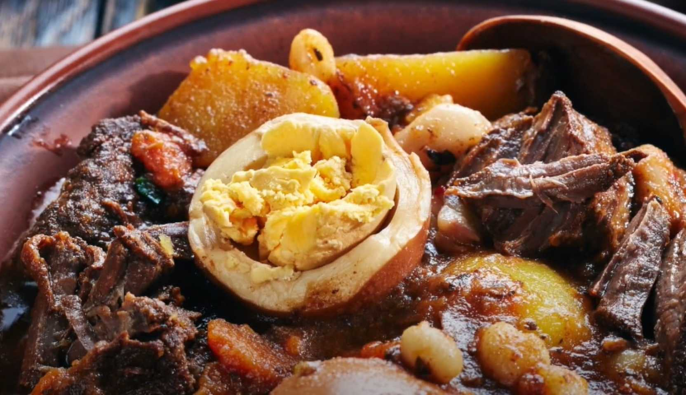
| Калорийность | 67.3 ккал | % от РСП - 4.45% |
| Белки | 3.8 г | % от РСП - 4.18% |
| Жиры | 2.8 г | % от РСП - 4.24% |
| Углеводы | 6.6 г | % от РСП - 4.78% |
| Пищевые волокна | 0.9 г | % от РСП - 4.5% |
| Вода | 43.8 г | % от РСП - 1.63% |
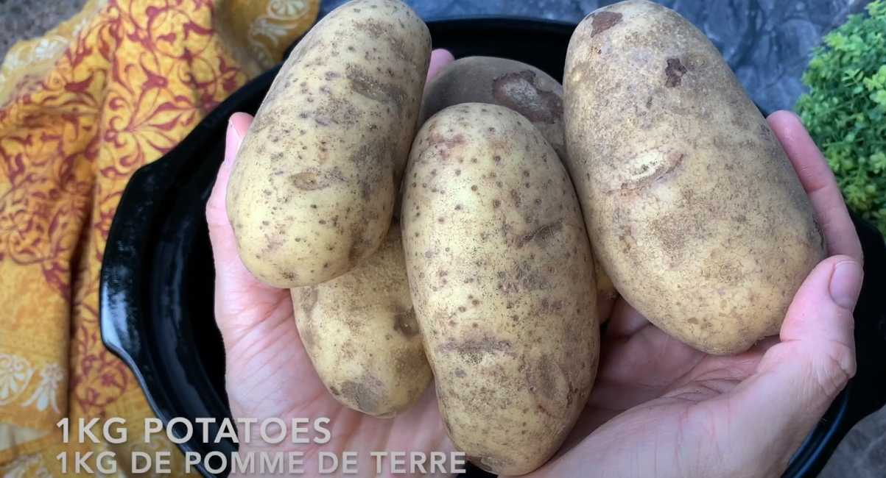
Очистите и нарежьте крупными кубиками картофель и поместите в жаровню или казан.
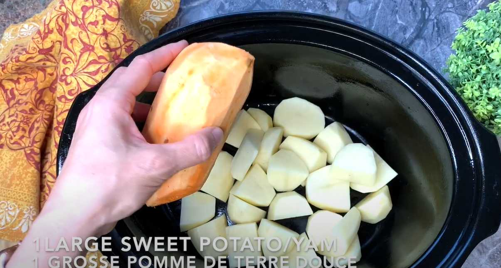
Очистите батат и добавьте целиком к картофелю.
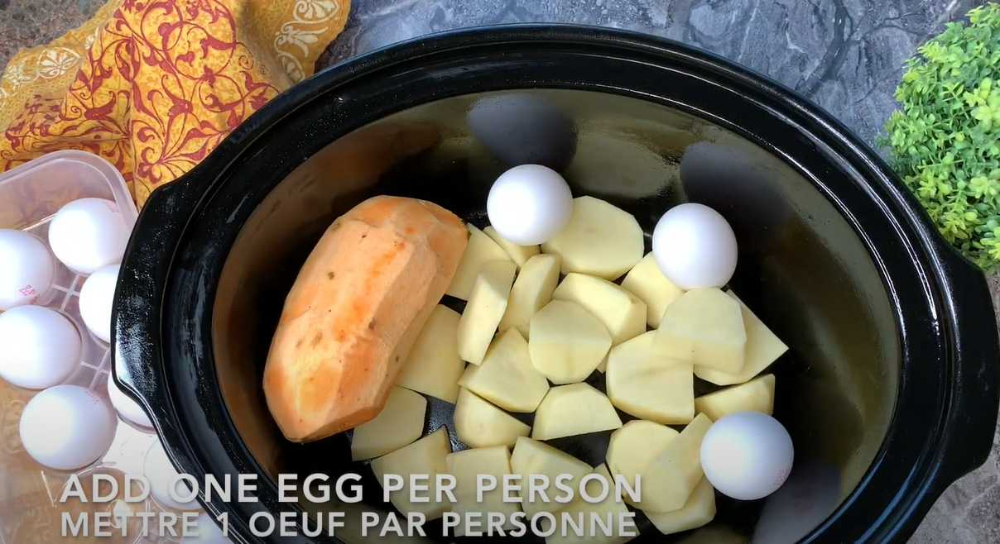
Уложите в казан яйца в скорлупе по одному на порцию.
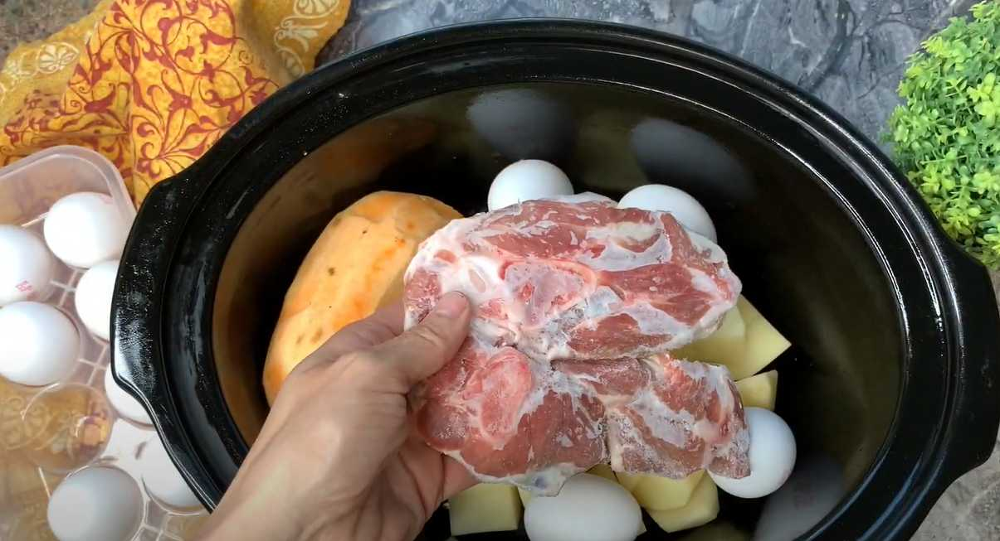
Добавьте кусок мяса весом от полкило до килограмма.
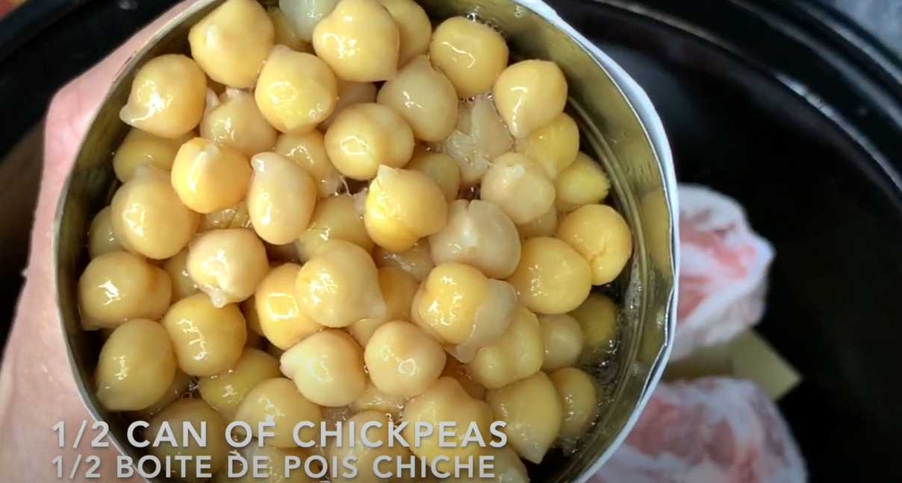
Добавьте полбанки консервированного нута.
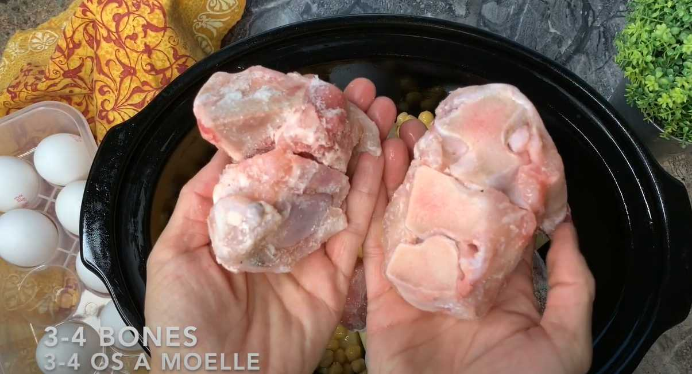
Поместите в кастрюлю две-три косточки.
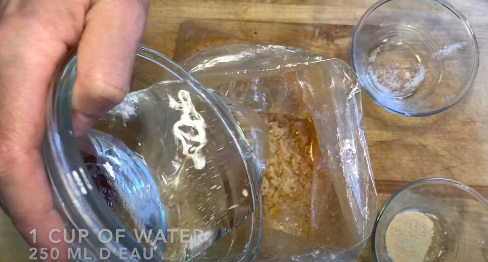
В пакет для запекания насыпьте длиннозерный попаренный рис, паприку, соль, чесночный порошок. Влейте растительное масло и воду, завяжите пакет и перемните содержимое.
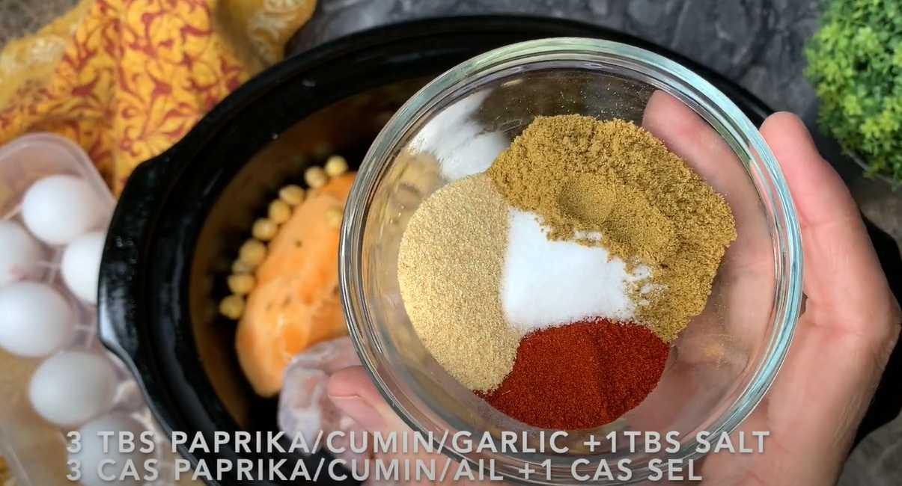
Добавьте к овощам и мясу паприку, кумин, чесночный порошок и соль.
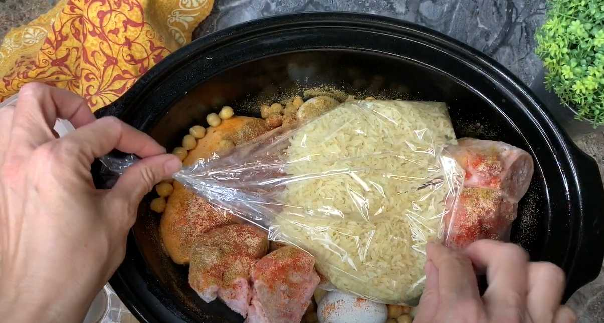
Выложите пакет с рисом и специями поверх мяса. Посыпьте чесночным порошком и паприкой.
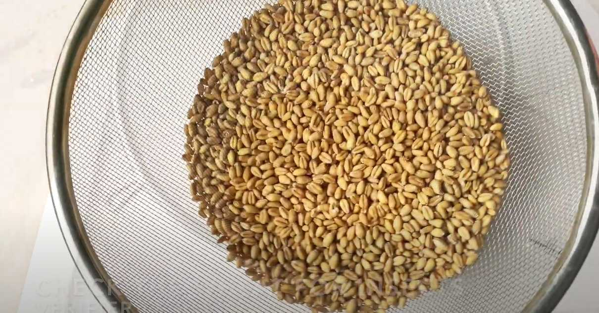
Цельные пшеничные зерна промойте в подсоленной воде и выложите в миску.
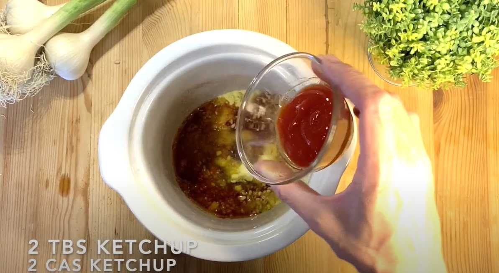
Посыпьте паприкой, чесночным порошком и молотым чили, добавьте сухой куриный бульон, растительное масло и кетчуп. Перемешайте и замочите на ночь.
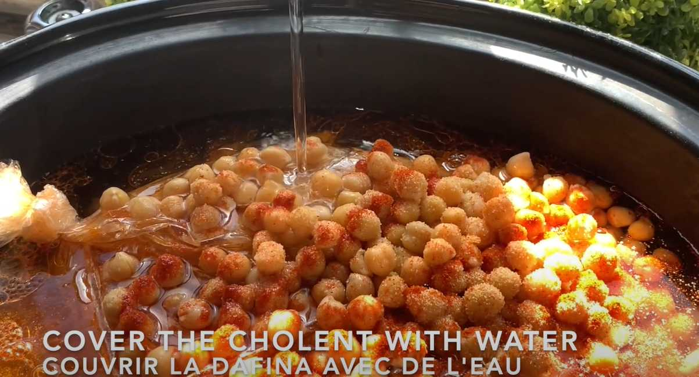
Добавьте замоченную пшеницу и воду в емкость с чолнтом.
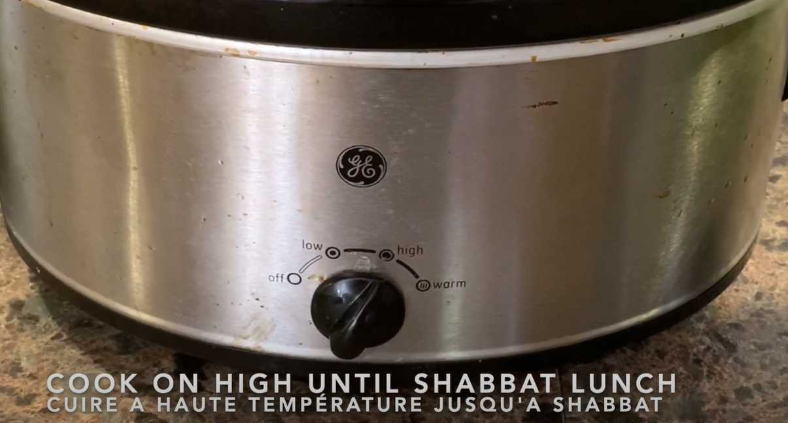
Готовьте на медленноварке всю ночь с пятницы на субботу.
Пшеницу следует замочить накануне приготовления блюда. Впрочем, ее добавление не обязательно. Если у вас нет медленноварки, готовьте хамин в духовке на 150 градусах.
Вверх